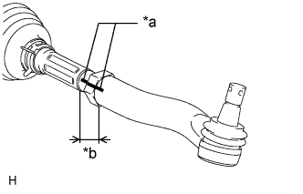
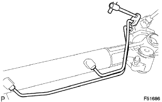
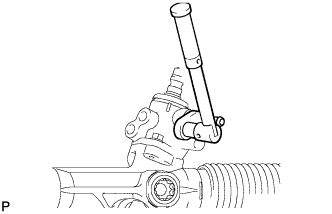
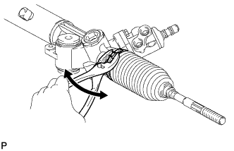
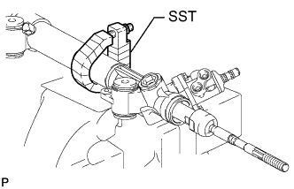
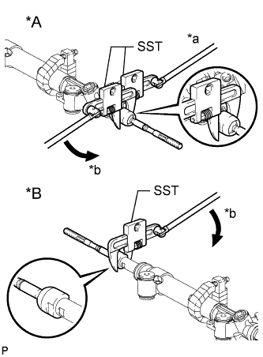

РУЛЕВОЙ МЕХАНИЗМ > РАЗБОРКА |
| 1. СНИМИТЕ НАКОНЕЧНИК ЛЕВОЙ РУЛЕВОЙ ТЯГИ В СБОРЕ |
|  |
Нанесите метки на левый наконечник рулевой тяги и рулевую тягу.
| *a | Метка |
| *b | Расстояние A |
Измерьте расстояние A и запишите результат измерения.
Снимите левый наконечник рулевой тяги.
| 2. СНИМИТЕ НАКОНЕЧНИК ПРАВОЙ РУЛЕВОЙ ТЯГИ В СБОРЕ |
| 3. СНИМИТЕ НАГНЕТАТЕЛЬНУЮ ТРУБКУ ПОВОРОТА |
|  |
С помощью разрезной головки снимите нагнетательные трубки левого и правого поворотов.
| 4. СНИМИТЕ ВЫПУСКНУЮ ОБРАТНУЮ ТРУБУ РУЛЕВОГО МЕХАНИЗМА |
|  |
С помощью разрезной головки снимите обратную трубу с рулевого механизма.
| 5. СНИМИТЕ ЛЕВЫЙ ФИКСАТОР ЗАЩИТНОГО ЧЕХЛА РУЛЕВОГО МЕХАНИЗМА |
С помощью плоскогубцев снимите фиксатор защитного чехла рулевого механизма.
| 6. СНИМИТЕ ПРАВЫЙ ФИКСАТОР ЗАЩИТНОГО ЧЕХЛА РУЛЕВОГО МЕХАНИЗМА |
| 7. СНИМИТЕ ЛЕВЫЙ ЗАЖИМ ЗАЩИТНОГО ЧЕХЛА РУЛЕВОГО МЕХАНИЗМА |
|  |
Плоскогубцами снимите зажим чехла, как показано на рисунке.
| 8. СНИМИТЕ ПРАВЫЙ ЗАЖИМ ЗАЩИТНОГО ЧЕХЛА РУЛЕВОГО МЕХАНИЗМА |
| 9. СНИМИТЕ ЗАЩИТНЫЙ ЧЕХОЛ РУЛЕВОГО МЕХАНИЗМА № 2 |
Снимите защитный чехол рулевого механизма № 2.
| 10. СНИМИТЕ ЗАЩИТНЫЙ ЧЕХОЛ РУЛЕВОГО МЕХАНИЗМА № 1 |
Снимите защитный чехол рулевого механизма № 1.
| 11. ЗАКРЕПИТЕ РУЛЕВОЙ МЕХАНИЗМ ШЕСТЕРНЯ-РЕЙКА С УСИЛИТЕЛЕМ В СБОРЕ |
|  |
Используя SST, зафиксируйте рулевой механизм в сборе.
| 12. СНИМИТЕ РУЛЕВУЮ ТЯГУ В СБОРЕ |
|  |
Зафиксируйте рейку рулевого механизма с помощью SST (с левой стороны).
| *A | Левая сторона |
| *B | Правая сторона |
| *a | Удерживайте |
| *b | Поверните |
Используя SST, снимите рулевую тягу (с левой стороны) с рейки рулевого механизма.
Используя SST, снимите рулевую тягу (с правой стороны) с рейки рулевого механизма.